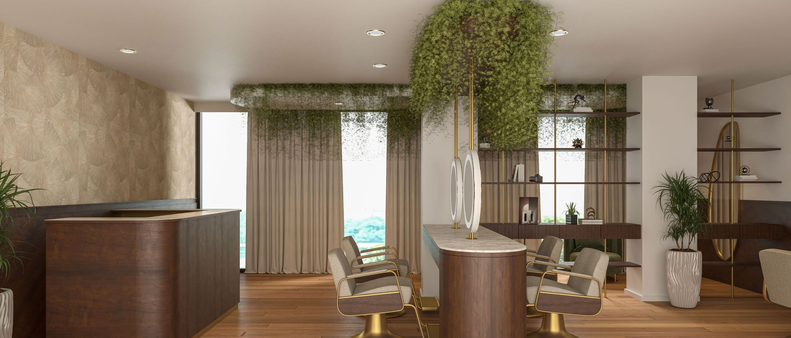
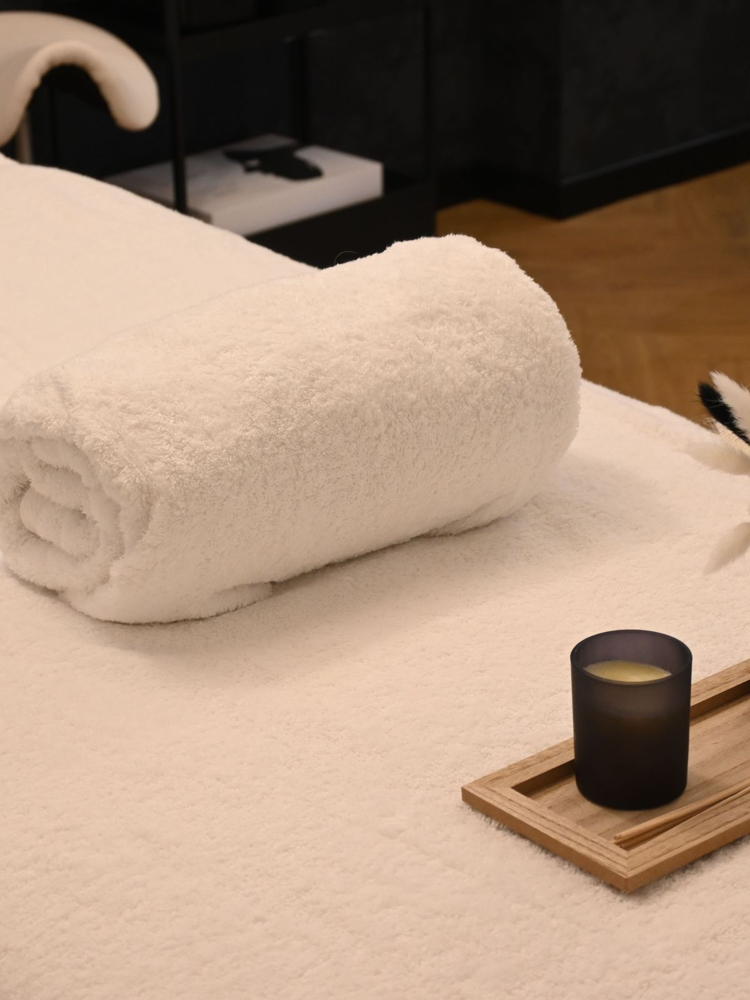
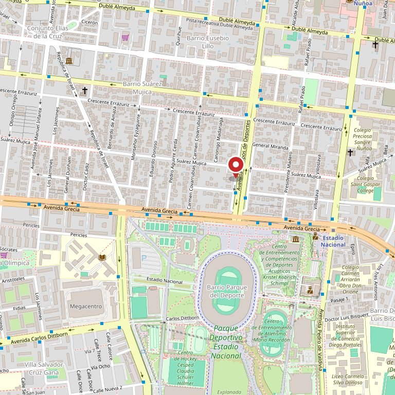

Peluquería
- Corte, lavado y peinado
- Color, raíz y mechas
- Tratamientos y alisados
- Peinados de evento
Ñuñoa · 402 reseñas
Dieciséis personas atienden acá, y cada una tiene su propia agenda abierta. Ésta es la página donde se ven todas juntas, con lo que hace cada una y su enlace para reservar.
Ver quién atiende Escribir por WhatsApp

402
reseñas en Google, verificadas el 27-08-2026. No mostramos la nota: acá lo que habla es el volumen
16
profesionales con agenda propia y abierta, contados en su AgendaPro el 11-09-2026
11 h
abiertos de lunes a viernes, de 09:00 a 20:00. El sábado hasta las 18:00
0
páginas suyas que carguen. El dominio salonmaritza.cl existe y devuelve «tienda no disponible»
La pregunta que decide
En un salón con cuatrocientas reseñas, la gente no vuelve por el local: vuelve por la persona que la atendió. Estos dieciséis nombres y sus dieciséis agendas ya existen —los publica el propio salón en AgendaPro— pero están sueltos, uno por enlace. Acá están juntos.
Los dieciséis nombres y los dieciséis enlaces son suyos: están publicados en su propia AgendaPro y los leímos el 11-09-2026. Lo único que falta es lo que más se busca: una foto y una línea por persona diciendo en qué es la mejor. De Marcia sí lo dice su propia agenda —manos y microblading—; de los demás, no. Con eso puesto, esta sección deja de ser una lista y pasa a ser la razón por la que alguien elige.
Las tres casas en una
El nombre lo dice y la ficha lo repite, pero en ninguna parte está escrito qué entra en cada una. Esta división es del rubro; la definitiva la escribe el salón.
No hay precios a propósito: los valores están en su agenda y cambian; congelarlos acá sería mentirle a quien lea la página el mes que viene.
Dónde queda
Conviene decirlo claro porque circula la idea contraria: en su agenda pública figura una sola dirección, Avenida Campos de Deportes 141, en Ñuñoa. Si hay más locales, no están publicados en ninguna parte — y eso es justamente lo que una página propia arreglaría en una línea.
La dirección y el horario no son ejemplo: los leímos el 11-09-2026 en su propia página de AgendaPro. Son de ellos y están publicados; lo que falta es que se encuentren en Google.
«Cuatrocientas dos personas contaron quién las atendió.
Ninguna pudo mandarle a una amiga el enlace de esa persona.»
Lo que pasa hoy
Su agenda general, tal como está hoy
Esta página no reemplaza la agenda: le pone una puerta de entrada propia y manda a la suya. La reserva la sigue tomando AgendaPro, que es donde tiene que estar.

Estas fotos son de bancos de uso libre y no son del salón. Están para que se vea de qué habla la página. Las de verdad las tienen ellos, y con dieciséis profesionales trabajando todos los días, las mejores fotos del rubro ya las están sacando.
Escribir
Si ya sabe con quién quiere atenderse, su enlace está más arriba. Si no, escriba: el número es el de su ficha de Google y es celular, así que recibe WhatsApp.

Para el dueño
Una propuesta de sitio web hecha por nuestra cuenta. El salón no la encargó ni la ha revisado. La dirección, el horario, el correo y los dieciséis nombres con sus enlaces los leímos el 11-09-2026 en su propia página pública de AgendaPro; las 402 reseñas y el celular, en su ficha de Google.
El 11-09-2026 abrimos salonmaritza.cl, que su propia agenda declara como suyo: devuelve «tienda no disponible» en todas las rutas —es una tienda Shopify dada de baja—. Aparte, veníamos con el dato de que eran varios salones y no lo pudimos comprobar: en su agenda figura una sola dirección. Preferimos decirlo así antes que dibujar sedes que no sabemos si existen. Si son más, se agregan en una tarde.
Una foto y una línea por persona: en qué es la mejor cada una. Es lo único marcado con línea punteada en la sección de equipo, y es lo que convierte una lista de nombres en la razón por la que alguien elige. No hay precios a propósito.